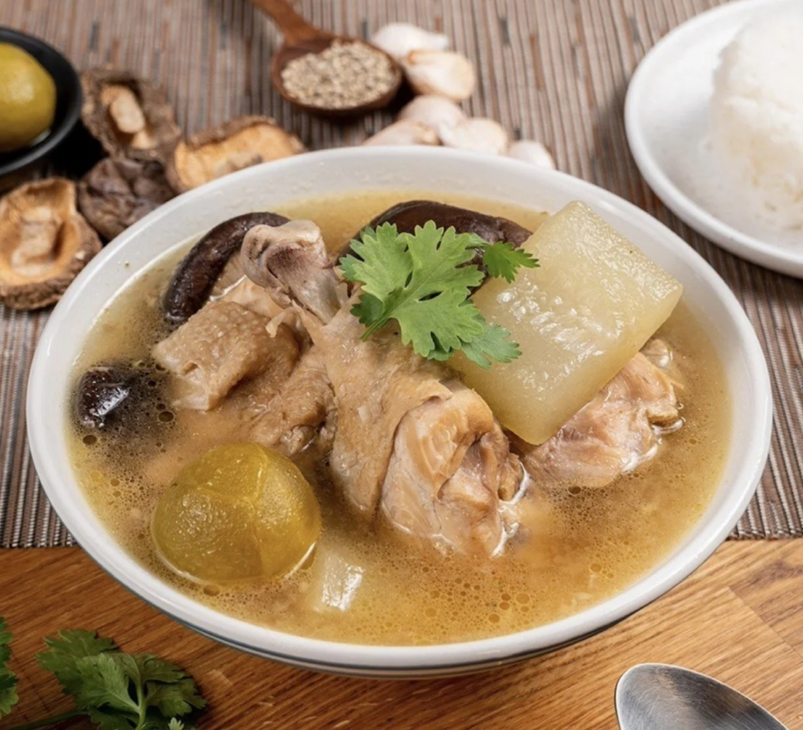

วัตถุดิบไก่ตุ๋นมะนาวดอง
น่องไก่ และสะโพกไก่ 500 กรัม
น้ำมัน 2 ช้อนโต๊ะ
ฟัก 1 ลูก
เห็ดหอมแห้ง 2 ถ้วยตวง
กระเทียม 4 ช้อนโต๊ะ
รากผักชี 3 ช้อนโต๊ะ
พริกไทยขาว 1 ช้อนโต๊ะ
มะนาวดอง 4 ลูก
น้ำเปล่า 4 ถ้วยตวง
ซีอิ๊วขาว 2 ช้อนโต๊ะ
เกลือ 2 ช้อนชา
ผักชี
วิธีทำไก่ตุ๋นมะนาวดอง
-นำเห็ดหอมแช่น้ำทิ้งไว้ 10 นาที เตรียมไว้ จากนั้นปอกเปลือก
และหั่นฝักขนาดชิ้นพอดีคำเตรียมไว้ และโขลก กระเทียม พริกไทย รากผักชีให้ละเอียด
-ตั้งกระทะ ใส่น้ำมัน เจียวสามเกลอให้หอม หลังจากนั้นใส่เนื้อไก่ ทอดพอให้เนื้อไก่ขึ้นสี
-ตามด้วยเห็ดหอมแห้ง ผัดให้หอม แล้วตักขึ้นพักไว้
-ตั้งหม้อ เทน้ำเปล่า ใส่เนื้อไก่ที่ผัดสามเกลอและเห็ดหอม ตุ๋นทิ้งไว้ 30 นาที
-ใส่ฟัก และมะนาวดอง ปรุงรสด้วย ซีอิ๊วขาว เกลือ ต้มอีก 5 นาที แล้วปิดไฟ
